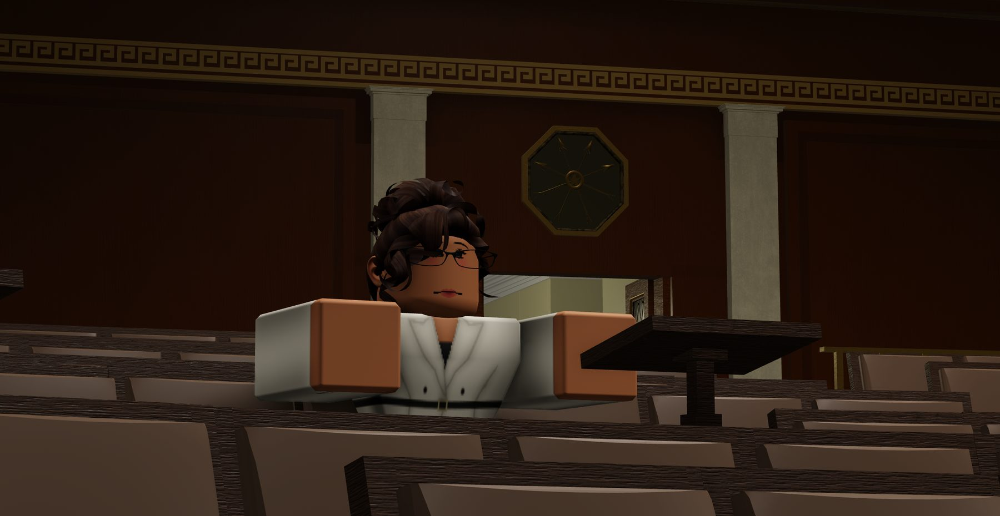

The Legislature
Members draft directives and bills, move them through committee, and take them to a recorded vote. Debate is in character and on the record — the transcript is what the press reports and what the wiki keeps.
In-universe institutions
A legislature, an executive and a bench — each with written rules and a public record.
How the country is organised
Three branches carry the simulation. Each has written rules, a public record, and members who hold their seats because someone put them there.
Members draft directives and bills, move them through committee, and take them to a recorded vote. Debate is in character and on the record — the transcript is what the press reports and what the wiki keeps.
An elected administration that signs or vetoes, names its cabinet, and answers for the state of the country at the next election. The office is powerful; it is not permanent.
Challenges are heard, argued and decided. A ruling can strike down a law that the other two branches were perfectly happy with — which is the point of having a bench at all.

The floor
Debate is in character and on the record. The transcript is what the press reports and what the wiki keeps.
Procedure
Directives follow a fixed format so that anyone can read one and know exactly what it does. Committees keep calendars. Votes are recorded. Departments file progress reports on a fixed cycle, signed by the people responsible for them.
The paperwork is not decoration. It is what makes a disagreement resolvable instead of endless, and what lets a new member catch up on a year of history in an afternoon.
Why it matters
A voice vote disappears. A recorded vote follows an official into the next campaign. That difference explains most of what happens on the floor.
Read the explainerOffices
Every one of these is filled by a member, and every one of them is open to someone who has been here a week.
File bills, work committees, whip votes, hold the floor.
Run departments, file reports, answer the press.
Hear challenges, write opinions, decide what the law allows.
Research, briefs and oral argument for the parties before the court.
Message, strategy and turnout for someone else's race.
Cover all of the above, and ask the questions nobody wants asked.